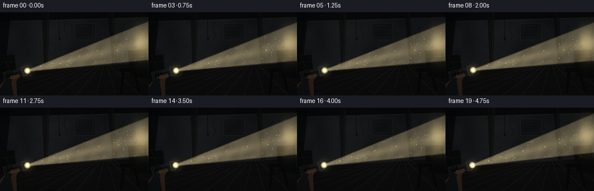
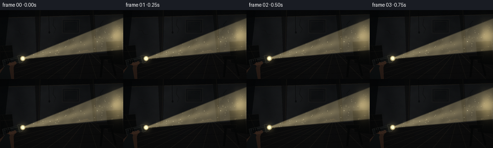

CODING AGENTS AS PIXEL WORLD MODELS
traex/GPT-5.6-Sol · phygen_052
点击播放 · 原生 RGB 像素
逐轮保存的候选
回放视频、检查图与代码变化。
每份候选均可单独播放。实际图片检查记录在下方工具轨迹中。
候选 01播放与检查图
点击播放 · 原生 RGB 像素


展开代码变化
--- 上一保存版本
+++ 本次保存版本
@@ -0,0 +1,222 @@
+from pathlib import Path
+import json, math
+import numpy as np
+from PIL import Image, ImageDraw, ImageFilter
+from scipy.ndimage import gaussian_filter
+import artifact_io
+
+ROOT = Path(__file__).resolve().parent
+spec = json.loads((ROOT / 'task_spec.json').read_text())
+W, H, N = spec['width'], spec['height'], spec['frames']
+S = 3
+w, h = W*S, H*S
+rng = np.random.default_rng(52049)
+
+def fractal_noise(height, width, seed=0):
+ rr = np.random.default_rng(seed)
+ out = np.zeros((height, width), np.float32)
+ for sigma, amp in [(80,1.0),(35,.70),(14,.42),(4,.19),(1.2,.07)]:
+ z = rr.normal(size=(height,width)).astype(np.float32)
+ z = gaussian_filter(z, sigma*S if sigma < 10 else sigma, mode='reflect')
+ z -= z.mean(); z /= z.std()+1e-6
+ out += amp*z
+ out -= out.min(); out /= out.max()+1e-6
+ return out
+
+# Fixed abandoned-room backdrop, painted at 3x for antialiasing.
+yy, xx = np.mgrid[0:h,0:w]
+X, Y = xx/S, yy/S
+wall_noise = fractal_noise(h,w,1701)
+base = np.empty((h,w,3), np.float32)
+# desaturated, cold brown plaster
+vertical = np.clip(Y/144,0,1)
+base[...,0] = 16 + 13*wall_noise + 2*vertical
+base[...,1] = 18 + 13*wall_noise + 1*vertical
+base[...,2] = 20 + 13*wall_noise
+# uneven old-wall stains
+stains = gaussian_filter(rng.random((h,w)).astype(np.float32), 42*S)
+stains = (stains-stains.min())/(stains.max()-stains.min()+1e-6)
+base *= (.78 + .28*stains[...,None])
+
+bg = Image.fromarray(np.uint8(np.clip(base,0,255)), 'RGB')
+d = ImageDraw.Draw(bg, 'RGBA')
+sc=lambda p: tuple(int(round(v*S)) for v in p)
+# ceiling, back wall boundary and deep corners
+d.polygon([sc((0,0)),sc((256,0)),sc((256,9)),sc((0,16))], fill=(7,8,9,245))
+d.line([sc((0,16)),sc((256,9))], fill=(44,39,31,100), width=2*S)
+d.polygon([sc((0,0)),sc((19,0)),sc((8,102)),sc((0,108))], fill=(5,7,8,210))
+# timber beams
+d.polygon([sc((72,0)),sc((85,0)),sc((82,92)),sc((76,94))], fill=(10,10,10,180))
+d.line([sc((83,0)),sc((80,92))], fill=(52,44,33,85), width=S)
+d.polygon([sc((185,0)),sc((195,0)),sc((201,89)),sc((194,90))], fill=(8,9,9,180))
+d.line([sc((193,0)),sc((199,89))], fill=(47,40,31,80), width=S)
+# cracked plaster, sparse and restrained
+cracks = [((112,18),(110,31),(116,40),(112,48)),
+ ((31,41),(39,43),(43,50),(52,51)),
+ ((215,22),(208,30),(211,37),(205,43)),
+ ((143,61),(147,68),(143,74))]
+for pts in cracks:
+ d.line([sc(p) for p in pts], fill=(4,5,6,125), width=S)
+ d.line([(int(p[0]*S+1),int(p[1]*S)) for p in pts], fill=(75,66,52,30), width=1)
+# faded rectangular patch/picture on wall
+d.rectangle([*sc((129,19)),*sc((165,48))], fill=(8,10,11,100), outline=(55,51,43,80), width=S)
+d.rectangle([*sc((133,23)),*sc((161,44))], outline=(61,54,44,45), width=S)
+# floor plane starts as oblique horizon
+d.polygon([sc((0,104)),sc((256,87)),sc((256,144)),sc((0,144))], fill=(12,12,12,245))
+# floorboards converging toward vanishing point (181,83)
+for x0 in [-80,-25,18,55,91,127,164,202,246,300]:
+ d.line([sc((181,83)),sc((x0,149))], fill=(44,38,30,95), width=S)
+for y0 in [103,117,133]:
+ # perspective-ish transverse seams
+ d.line([sc((0,y0+5)),sc((256,y0-4))], fill=(2,3,3,110), width=S)
+# old storage silhouettes at margins: crates and a narrow cabinet
+d.polygon([sc((0,75)),sc((25,73)),sc((29,112)),sc((0,116))], fill=(7,8,8,235), outline=(41,36,29,100))
+d.line([sc((2,87)),sc((27,85))], fill=(54,45,34,75), width=S)
+d.line([sc((5,75)),sc((22,112))], fill=(51,43,33,55), width=S)
+d.polygon([sc((220,66)),sc((252,64)),sc((256,115)),sc((224,111))], fill=(7,8,8,230), outline=(39,34,27,100))
+d.line([sc((221,78)),sc((253,76))], fill=(55,46,34,65), width=S)
+d.ellipse([*sc((231,82)),*sc((234,85))], fill=(58,52,42,90))
+# abandoned chair/stool near right foreground
+d.polygon([sc((205,96)),sc((236,95)),sc((234,103)),sc((207,104))], fill=(6,7,7,235), outline=(53,45,34,100))
+d.polygon([sc((210,103)),sc((215,103)),sc((211,140)),sc((207,140))], fill=(6,7,7,245))
+d.polygon([sc((229,102)),sc((233,102)),sc((242,137)),sc((238,137))], fill=(6,7,7,245))
+# tiny dangling cord, useful depth cue
+d.line([sc((101,0)),sc((102,45))], fill=(5,6,6,175), width=S)
+d.ellipse([*sc((100.5,44)),*sc((104,49))], fill=(6,7,7,180))
+bg_arr = np.asarray(bg).astype(np.float32)
+
+# Fixed world-space dust cloud; every mote gets coherent velocity and depth.
+M = 330
+particles = {
+ 'x': rng.uniform(22,260,M), 'y': rng.uniform(8,132,M),
+ 'vx': rng.normal(.10,.16,M), 'vy': rng.uniform(-.24,.05,M),
+ 'depth': rng.uniform(0,1,M), 'phase': rng.uniform(0,2*np.pi,M),
+ 'brightness': rng.uniform(.45,1.0,M)
+}
+# A few large, near-lens motes for true depth.
+K=26
+near = {
+ 'x': rng.uniform(30,260,K), 'y': rng.uniform(12,132,K),
+ 'vx': rng.normal(.16,.22,K), 'vy': rng.uniform(-.35,.08,K),
+ 'phase': rng.uniform(0,2*np.pi,K), 'r': rng.uniform(1.3,3.6,K),
+ 'a': rng.uniform(35,105,K)
+}
+
+def add_geometry(arr, t, sx, sy, angle):
+ """Flashlight and the hand holding it, aligned exactly with the light ray."""
+ im = Image.fromarray(np.uint8(np.clip(arr,0,255)), 'RGB')
+ g = ImageDraw.Draw(im, 'RGBA')
+ ux,uy=math.cos(angle),math.sin(angle); px,py=-uy,ux
+ # flashlight body extends behind lens
+ def q(along, across): return ((sx+along*ux+across*px)*S,(sy+along*uy+across*py)*S)
+ body=[q(-37,-6.4),q(-2,-6.1),q(2,-4.7),q(2,4.7),q(-2,6.1),q(-37,6.4)]
+ g.polygon(body, fill=(14,16,17,255), outline=(77,78,70,220))
+ # metallic highlight and grip rings
+ g.line([q(-33,-3.5),q(-4,-3.5)], fill=(94,95,86,105), width=max(1,S))
+ for a in [-30,-26,-22]:
+ g.line([q(a,-6.2),q(a,6.2)], fill=(3,4,4,220), width=2*S)
+ # flared head
+ g.polygon([q(-4,-8.1),q(3,-7.3),q(5,-5),q(5,5),q(3,7.3),q(-4,8.1)],
+ fill=(19,21,21,255), outline=(105,101,86,210))
+ # hand and sleeve in foreground, wrapped below body
+ hand_shift=1.2*math.sin(t*.45)
+ g.polygon([sc((0,125+hand_shift)),q(-30,4),q(-20,4),q(-13,7),q(-18,14),sc((29,144)),sc((0,144))],
+ fill=(46,32,25,255))
+ g.polygon([sc((0,132)),q(-32,4),q(-24,8),q(-27,13),sc((23,144)),sc((0,144))],
+ fill=(14,17,18,255))
+ # fingers curled around grip
+ for a,off in [(-23,5.0),(-18,5.5),(-13,5.0)]:
+ c=q(a,off)
+ r=3.3*S
+ g.ellipse([c[0]-r,c[1]-r,c[0]+r,c[1]+r], fill=(61,42,32,235))
+ # lens rim and luminous glass
+ c=q(5.2,0); rr=5.1*S
+ g.ellipse([c[0]-rr,c[1]-rr,c[0]+rr,c[1]+rr], fill=(111,101,72,245), outline=(186,168,112,230), width=S)
+ r2=3.6*S
+ g.ellipse([c[0]-r2,c[1]-r2,c[0]+r2,c[1]+r2], fill=(255,247,202,255))
+ return np.asarray(im).astype(np.float32)
+
+frames=[]
+for fi in range(N):
+ t=fi/(N-1)
+ # Very slight hand-held sweep. The source and device share the same motion.
+ sx=42.0 + .65*math.sin(2*math.pi*(t*.62+.08))
+ sy=101.5 + 1.0*math.sin(2*math.pi*(t*.55+.31))
+ angle=math.radians(-14.2 + 1.15*math.sin(2*math.pi*(t*.48+.07)))
+ ux,uy=math.cos(angle),math.sin(angle)
+ px,py=-uy,ux
+ dx=X-sx; dy=Y-sy
+ along=dx*ux+dy*uy
+ perp=np.abs(dx*px+dy*py)
+ # Cone half width expands linearly as expected from a flashlight reflector.
+ half=2.0 + .145*np.maximum(along,0)
+ edge=np.clip((half-perp)/3.1,0,1)
+ edge=edge*edge*(3-2*edge)
+ longitudinal=np.clip(along/9,0,1)*np.clip((248-along)/23,0,1)
+ scatter=edge*longitudinal*(.92-.30*np.clip(along/225,0,1))
+ # soft central hot ray plus turbulent density in dusty air
+ density=.82 + .18*wall_noise + .035*np.sin(X*.26+Y*.17+fi*.14)
+ center=np.exp(-(perp/(2.0+.040*np.maximum(along,0)))**2)*np.clip(along/7,0,1)
+ beam=np.clip(scatter*density + .22*center*longitudinal,0,1)
+ arr=bg_arr.copy()
+ # physically intuitive additive, warm volumetric scatter
+ light=np.array([98,87,60],np.float32)
+ arr += beam[...,None]*light
+ # desaturating haze in the cone
+ arr += (beam[...,None]**1.6)*np.array([15,14,10],np.float32)
+ # impact pool on the far wall/right side, located at continuation of the ray
+ hitx=244.0; hity=sy+(hitx-sx)*math.tan(angle)
+ spot=np.exp(-(((X-hitx)/20)**2+((Y-hity)/29)**2)*1.25)
+ # Mask mainly far-right wall so it reads as the surface struck by the ray.
+ spot*=np.clip((X-203)/32,0,1)
+ arr += spot[...,None]*np.array([95,83,53],np.float32)
+
+ # Dust layers, with soft near particles and pin-sharp middle-distance motes.
+ dust_glow=Image.new('RGBA',(w,h),(0,0,0,0)); dg=ImageDraw.Draw(dust_glow,'RGBA')
+ dust_core=Image.new('RGBA',(w,h),(0,0,0,0)); dc=ImageDraw.Draw(dust_core,'RGBA')
+ for i in range(M):
+ xxp=(particles['x'][i]+particles['vx'][i]*fi + .42*math.sin(fi*.16+particles['phase'][i]))%270
+ yyp=(particles['y'][i]+particles['vy'][i]*fi + .24*math.sin(fi*.21+particles['phase'][i]*1.7)-4)%132+6
+ ax=xxp-sx; ay=yyp-sy
+ s=ax*ux+ay*uy; p=abs(ax*px+ay*py)
+ hw=2+.145*max(s,0)
+ if s>7 and s<245 and p<hw:
+ local=(1-p/max(hw,1))**.7 * (1-.32*s/245)
+ twinkle=.74+.26*math.sin(fi*.32+particles['phase'][i])**2
+ a=int(np.clip(205*local*particles['brightness'][i]*twinkle,10,215))
+ z=particles['depth'][i]
+ rad=(.28+.62*z)*S
+ cx,cy=xxp*S,yyp*S
+ if z>.72:
+ rr=rad*2.0
+ dg.ellipse([cx-rr,cy-rr,cx+rr,cy+rr],fill=(255,233,171,max(5,a//4)))
+ dc.ellipse([cx-rad,cy-rad,cx+rad,cy+rad],fill=(255,241,191,a))
+ if a>120 and z<.65:
+ dc.point((int(cx),int(cy)),fill=(255,255,229,min(255,a+35)))
+ for i in range(K):
+ xxp=(near['x'][i]+near['vx'][i]*fi + math.sin(fi*.12+near['phase'][i]))%270
+ yyp=(near['y'][i]+near['vy'][i]*fi + .6*math.cos(fi*.1+near['phase'][i])-5)%134+4
+ ax=xxp-sx; ay=yyp-sy; s=ax*ux+ay*uy; p=abs(ax*px+ay*py); hw=2+.145*max(s,0)
+ if 5<s<250 and p<hw:
+ local=(1-p/max(hw,1))**.55
+ r=near['r'][i]*S; a=int(near['a'][i]*local)
+ dg.ellipse([xxp*S-r,yyp*S-r,xxp*S+r,yyp*S+r],fill=(255,231,171,a))
+ dust_glow=dust_glow.filter(ImageFilter.GaussianBlur(2.0*S))
+ layer=Image.alpha_composite(dust_glow,dust_core)
+ arr=np.asarray(Image.alpha_composite(Image.fromarray(np.uint8(np.clip(arr,0,255)),'RGB').convert('RGBA'),layer).convert('RGB')).astype(np.float32)
+ # The foreground flashlight occludes the atmospheric cone at its origin.
+ arr=add_geometry(arr,fi,sx,sy,angle)
+ # Lens bloom on top of hardware.
+ bloom=np.exp(-(((X-(sx+5*ux))**2+(Y-(sy+5*uy))**2)/(2*6.0**2)))
+ arr += bloom[...,None]*np.array([55,49,31],np.float32)
+ # Cinematic vignette and extremely subtle sensor grain.
+ vign=np.clip(1-.27*((X-W/2)/(W*.72))**2-.32*((Y-H/2)/(H*.72))**2,.58,1)
+ arr*=vign[...,None]
+ noise=np.random.default_rng(9000+fi).normal(0,1.15,(h,w,1))
+ arr=np.clip(arr+noise,0,255).astype(np.uint8)
+ out=Image.fromarray(arr).resize((W,H),Image.Resampling.LANCZOS)
+ frames.append(np.asarray(out,dtype=np.uint8))
+
+frames=np.stack(frames,axis=0)
+artifact_io.save(frames,ROOT)
+print('saved',frames.shape,frames.dtype,'range',frames.min(),frames.max())
可观测工具轨迹
实际执行的命令与返回图片。
命令 1exit 0
/bin/bash -lc "cat prompt.txt && printf '\\n---RULES---\\n' && cat GENERATION_RULES.md && printf '\\n---SPEC---\\n' && cat task_spec.json"
命令 2exit 0
/bin/bash -lc "find . -maxdepth 2 -type f -printf '%p %s bytes\\n' | sort | head -200"
命令 3exit 0
/bin/bash -lc "sed -n '1,260p' artifact_io.py"
命令 4exit 0
/bin/bash -lc "python - <<'PY'
import PIL,numpy
print('PIL',PIL.__version__,'numpy',numpy.__version__)
try:
import scipy; print('scipy',scipy.__version__)
except Exception as e: print('no scipy',e)
PY"命令 5exit 0
/bin/bash -lc "cat > generate.py <<'PY'
from pathlib import Path
import json, math
import numpy as np
from PIL import Image, ImageDraw, ImageFilter
from scipy.ndimage import gaussian_filter
import artifact_io
ROOT = Path(__file__).resolve().parent
spec = json.loads((ROOT / 'task_spec.json').read_text())
W, H, N = spec['width'], spec['height'], spec['frames']
S = 3
w, h = W*S, H*S
rng = np.random.default_rng(52049)
def fractal_noise(height, width, seed=0):
rr = np.random.default_rng(seed)
out = np.zeros((height, width), np.float32)
for sigma, amp in [(80,1.0),(35,.70),(14,.42),(4,.19),(1.2,.07)]:
z = rr.normal(size=(height,width)).astype(np.float32)
z = gaussian_filter(z, sigma*S if sigma < 10 else sigma, mode='reflect')
z -= z.mean(); z /= z.std()+1e-6
out += amp*z
out -= out.min(); out /= out.max()+1e-6
return out
# Fixed abandoned-room backdrop, painted at 3x for antialiasing.
yy, xx = np.mgrid[0:h,0:w]
X, Y = xx/S, yy/S
wall_noise = fractal_noise(h,w,1701)
base = np.empty((h,w,3), np.float32)
# desaturated, cold brown plaster
vertical = np.clip(Y/144,0,1)
base[...,0] = 16 + 13*wall_noise + 2*vertical
base[...,1] = 18 + 13*wall_noise + 1*vertical
base[...,2] = 20 + 13*wall_noise
# uneven old-wall stains
stains = gaussian_filter(rng.random((h,w)).astype(np.float32), 42*S)
stains = (stains-stains.min())/(stains.max()-stains.min()+1e-6)
base *= (.78 + .28*stains[...,None])
bg = Image.fromarray(np.uint8(np.clip(base,0,255)), 'RGB')
d = ImageDraw.Draw(bg, 'RGBA')
sc=lambda p: tuple(int(round(v*S)) for v in p)
# ceiling, back wall boundary and deep corners
d.polygon([sc((0,0)),sc((256,0)),sc((256,9)),sc((0,16))], fill=(7,8,9,245))
d.line([sc((0,16)),sc((256,9))], fill=(44,39,31,100), width=2*S)
d.polygon([sc((0,0)),sc((19,0)),sc((8,102)),sc((0,108))], fill=(5,7,8,210))
# timber beams
d.polygon([sc((72,0)),sc((85,0)),sc((82,92)),sc((76,94))], fill=(10,10,10,180))
d.line([sc((83,0)),sc((80,92))], fill=(52,44,33,85), width=S)
d.polygon([sc((185,0)),sc((195,0)),sc((201,89)),sc((194,90))], fill=(8,9,9,180))
d.line([sc((193,0)),sc((199,89))], fill=(47,40,31,80), width=S)
# cracked plaster, sparse and restrained
cracks = [((112,18),(110,31),(116,40),(112,48)),
((31,41),(39,43),(43,50),(52,51)),
((215,22),(208,30),(211,37),(205,43)),
((143,61),(147,68),(143,74))]
for pts in cracks:
d.line([sc(p) for p in pts], fill=(4,5,6,125), width=S)
d.line([(int(p[0]*S+1),int(p[1]*S)) for p in pts], fill=(75,66,52,30), width=1)
# faded rectangular patch/picture on wall
d.rectangle([*sc((129,19)),*sc((165,48))], fill=(8,10,11,100), outline=(55,51,43,80), width=S)
d.rectangle([*sc((133,23)),*sc((161,44))], outline=(61,54,44,45), width=S)
# floor plane starts as oblique horizon
d.polygon([sc((0,104)),sc((256,87)),sc((256,144)),sc((0,144))], fill=(12,12,12,245))
# floorboards converging toward vanishing point (181,83)
for x0 in [-80,-25,18,55,91,127,164,202,246,300]:
d.line([sc((181,83)),sc((x0,149))], fill=(44,38,30,95), width=S)
for y0 in [103,117,133]:
# perspective-ish transverse seams
d.line([sc((0,y0+5)),sc((256,y0-4))], fill=(2,3,3,110), width=S)
# old storage silhouettes at margins: crates and a narrow cabinet
d.polygon([sc((0,75)),sc((25,73)),sc((29,112)),sc((0,116))], fill=(7,8,8,235), outline=(41,36,29,100))
d.line([sc((2,87)),sc((27,85))], fill=(54,45,34,75), width=S)
d.line([sc((5,75)),sc((22,112))], fill=(51,43,33,55), width=S)
d.polygon([sc((220,66)),sc((252,64)),sc((256,115)),sc((224,111))], fill=(7,8,8,230), outline=(39,34,27,100))
d.line([sc((221,78)),sc((253,76))], fill=(55,46,34,65), width=S)
d.ellipse([*sc((231,82)),*sc((234,85))], fill=(58,52,42,90))
# abandoned chair/stool near right foreground
d.polygon([sc((205,96)),sc((236,95)),sc((234,103)),sc((207,104))], fill=(6,7,7,235), outline=(53,45,34,100))
d.polygon([sc((210,103)),sc((215,103)),sc((211,140)),sc((207,140))], fill=(6,7,7,245))
d.polygon([sc((229,102)),sc((233,102)),sc((242,137)),sc((238,137))], fill=(6,7,7,245))
# tiny dangling cord, useful depth cue
d.line([sc((101,0)),sc((102,45))], fill=(5,6,6,175), width=S)
d.ellipse([*sc((100.5,44)),*sc((104,49))], fill=(6,7,7,180))
bg_arr = np.asarray(bg).astype(np.float32)
# Fixed world-space dust cloud; every mote gets coherent velocity and depth.
M = 330
particles = {
'x': rng.uniform(22,260,M), 'y': rng.uniform(8,132,M),
'vx': rng.normal(.10,.16,M), 'vy': rng.uniform(-.24,.05,M),
'depth': rng.uniform(0,1,M), 'phase': rng.uniform(0,2*np.pi,M),
'brightness': rng.uniform(.45,1.0,M)
}
# A few large, near-lens motes for true depth.
K=26
near = {
'x': rng.uniform(30,260,K), 'y': rng.uniform(12,132,K),
'vx': rng.normal(.16,.22,K), 'vy': rng.uniform(-.35,.08,K),
'phase': rng.uniform(0,2*np.pi,K), 'r': rng.uniform(1.3,3.6,K),
'a': rng.uniform(35,105,K)
}
def add_geometry(arr, t, sx, sy, angle):
\"\"\"Flashlight and the hand holding it, aligned exactly with the light ray.\"\"\"
im = Image.fromarray(np.uint8(np.clip(arr,0,255)), 'RGB')
g = ImageDraw.Draw(im, 'RGBA')
ux,uy=math.cos(angle),math.sin(angle); px,py=-uy,ux
# flashlight body extends behind lens
def q(along, across): return ((sx+along*ux+across*px)*S,(sy+along*uy+across*py)*S)
body=[q(-37,-6.4),q(-2,-6.1),q(2,-4.7),q(2,4.7),q(-2,6.1),q(-37,6.4)]
g.polygon(body, fill=(14,16,17,255), outline=(77,78,70,220))
# metallic highlight and grip rings
g.line([q(-33,-3.5),q(-4,-3.5)], fill=(94,95,86,105), width=max(1,S))
for a in [-30,-26,-22]:
g.line([q(a,-6.2),q(a,6.2)], fill=(3,4,4,220), width=2*S)
# flared head
g.polygon([q(-4,-8.1),q(3,-7.3),q(5,-5),q(5,5),q(3,7.3),q(-4,8.1)],
fill=(19,21,21,255), outline=(105,101,86,210))
# hand and sleeve in foreground, wrapped below body
hand_shift=1.2*math.sin(t*.45)
g.polygon([sc((0,125+hand_shift)),q(-30,4),q(-20,4),q(-13,7),q(-18,14),sc((29,144)),sc((0,144))],
fill=(46,32,25,255))
g.polygon([sc((0,132)),q(-32,4),q(-24,8),q(-27,13),sc((23,144)),sc((0,144))],
fill=(14,17,18,255))
# fingers curled around grip
for a,off in [(-23,5.0),(-18,5.5),(-13,5.0)]:
c=q(a,off)
r=3.3*S
g.ellipse([c[0]-r,c[1]-r,c[0]+r,c[1]+r], fill=(61,42,32,235))
# lens rim and luminous glass
c=q(5.2,0); rr=5.1*S
g.ellipse([c[0]-rr,c[1]-rr,c[0]+rr,c[1]+rr], fill=(111,101,72,245), outline=(186,168,112,230), width=S)
r2=3.6*S
g.ellipse([c[0]-r2,c[1]-r2,c[0]+r2,c[1]+r2], fill=(255,247,202,255))
return np.asarray(im).astype(np.float32)
frames=[]
for fi in range(N):
t=fi/(N-1)
# Very slight hand-held sweep. The source and device share the same motion.
sx=42.0 + .65*math.sin(2*math.pi*(t*.62+.08))
sy=101.5 + 1.0*math.sin(2*math.pi*(t*.55+.31))
angle=math.radians(-14.2 + 1.15*math.sin(2*math.pi*(t*.48+.07)))
ux,uy=math.cos(angle),math.sin(angle)
px,py=-uy,ux
dx=X-sx; dy=Y-sy
along=dx*ux+dy*uy
perp=np.abs(dx*px+dy*py)
# Cone half width expands linearly as expected from a flashlight reflector.
half=2.0 + .145*np.maximum(along,0)
edge=np.clip((half-perp)/3.1,0,1)
edge=edge*edge*(3-2*edge)
longitudinal=np.clip(along/9,0,1)*np.clip((248-along)/23,0,1)
scatter=edge*longitudinal*(.92-.30*np.clip(along/225,0,1))
# soft central hot ray plus turbulent density in dusty air
density=.82 + .18*wall_noise + .035*np.sin(X*.26+Y*.17+fi*.14)
center=np.exp(-(perp/(2.0+.040*np.maximum(along,0)))**2)*np.clip(along/7,0,1)
beam=np.clip(scatter*density + .22*center*longitudinal,0,1)
arr=bg_arr.copy()
# physically intuitive additive, warm volumetric scatter
light=np.array([98,87,60],np.float32)
arr += beam[...,None]*light
# desaturating haze in the cone
arr += (beam[...,None]**1.6)*np.array([15,14,10],np.float32)
# impact pool on the far wall/right side, located at continuation of the ray
hitx=244.0; hity=sy+(hitx-sx)*math.tan(angle)
spot=np.exp(-(((X-hitx)/20)**2+((Y-hity)/29)**2)*1.25)
# Mask mainly far-right wall so it reads as the surface struck by the ray.
spot*=np.clip((X-203)/32,0,1)
arr += spot[...,None]*np.array([95,83,53],np.float32)
# Dust layers, with soft near particles and pin-sharp middle-distance motes.
dust_glow=Image.new('RGBA',(w,h),(0,0,0,0)); dg=ImageDraw.Draw(dust_glow,'RGBA')
dust_core=Image.new('RGBA',(w,h),(0,0,0,0)); dc=ImageDraw.Draw(dust_core,'RGBA')
for i in range(M):
xxp=(particles['x'][i]+particles['vx'][i]*fi + .42*math.sin(fi*.16+particles['phase'][i]))%270
yyp=(particles['y'][i]+particles['vy'][i]*fi + .24*math.sin(fi*.21+particles['phase'][i]*1.7)-4)%132+6
ax=xxp-sx; ay=yyp-sy
s=ax*ux+ay*uy; p=abs(ax*px+ay*py)
hw=2+.145*max(s,0)
if s>7 and s<245 and p<hw:
local=(1-p/max(hw,1))**.7 * (1-.32*s/245)
twinkle=.74+.26*math.sin(fi*.32+particles['phase'][i])**2
a=int(np.clip(205*local*particles['brightness'][i]*twinkle,10,215))
z=particles['depth'][i]
rad=(.28+.62*z)*S
cx,cy=xxp*S,yyp*S
if z>.72:
rr=rad*2.0
dg.ellipse([cx-rr,cy-rr,cx+rr,cy+rr],fill=(255,233,171,max(5,a//4)))
dc.ellipse([cx-rad,cy-rad,cx+rad,cy+rad],fill=(255,241,191,a))
if a>120 and z<.65:
dc.point((int(cx),int(cy)),fill=(255,255,229,min(255,a+35)))
for i in range(K):
xxp=(near['x'][i]+near['vx'][i]*fi + math.sin(fi*.12+near['phase'][i]))%270
yyp=(near['y'][i]+near['vy'][i]*fi + .6*math.cos(fi*.1+near['phase'][i])-5)%134+4
ax=xxp-sx; ay=yyp-sy; s=ax*ux+ay*uy; p=abs(ax*px+ay*py); hw=2+.145*max(s,0)
if 5<s<250 and p<hw:
local=(1-p/max(hw,1))**.55
r=near['r'][i]*S; a=int(near['a'][i]*local)
dg.ellipse([xxp*S-r,yyp*S-r,xxp*S+r,yyp*S+r],fill=(255,231,171,a))
dust_glow=dust_glow.filter(ImageFilter.GaussianBlur(2.0*S))
layer=Image.alpha_composite(dust_glow,dust_core)
arr=np.asarray(Image.alpha_composite(Image.fromarray(np.uint8(np.clip(arr,0,255)),'RGB').convert('RGBA'),layer).convert('RGB')).astype(np.float32)
# The foreground flashlight occludes the atmospheric cone at its origin.
arr=add_geometry(arr,fi,sx,sy,angle)
# Lens bloom on top of hardware.
bloom=np.exp(-(((X-(sx+5*ux))**2+(Y-(sy+5*uy))**2)/(2*6.0**2)))
arr += bloom[...,None]*np.array([55,49,31],np.float32)
# Cinematic vignette and extremely subtle sensor grain.
vign=np.clip(1-.27*((X-W/2)/(W*.72))**2-.32*((Y-H/2)/(H*.72))**2,.58,1)
arr*=vign[...,None]
noise=np.random.default_rng(9000+fi).normal(0,1.15,(h,w,1))
arr=np.clip(arr+noise,0,255).astype(np.uint8)
out=Image.fromarray(arr).resize((W,H),Image.Resampling.LANCZOS)
frames.append(np.asarray(out,dtype=np.uint8))
frames=np.stack(frames,axis=0)
artifact_io.save(frames,ROOT)
print('saved',frames.shape,frames.dtype,'range',frames.min(),frames.max())
PY
python generate.py
ls -lh pixels.npz inspection.png index.html frames/00.png frames/19.png"命令 6exit 0
/bin/bash -lc "python - <<'PY'
import numpy as np
from PIL import Image
f=np.stack([np.asarray(Image.open(f'frames/{i:02}.png')) for i in range(20)])
print('shape/dtype',f.shape,f.dtype)
print('mean luminance by frame',np.round(f.mean((1,2,3)),2))
print('mean absolute temporal deltas',np.round(np.abs(f[1:].astype(float)-f[:-1]).mean((1,2,3)),2))
# luminance profile sampled along intended beam center in frame 10 versus offset
im=f[10].mean(2)
for x in [50,80,110,140,170,200,235]:
y=int(101.5+(x-42)*np.tan(np.deg2rad(-14.2)))
a=im[max(0,y-2):y+3,max(0,x-2):x+3].mean()
off=im[max(0,y+24):min(144,y+29),max(0,x-2):x+3].mean()
print(x,y,round(a,1),round(off,1))
assert f.shape==(20,144,256,3) and f.dtype==np.uint8
PY
python -m py_compile generate.py
sha256sum pixels.npz generate.py | cut -c1-80"保存候选 1 份；完成命令 6 次；可验证图片返回 0 张。原始 API 响应与完整日志保留在本地。